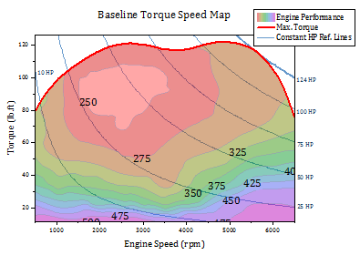
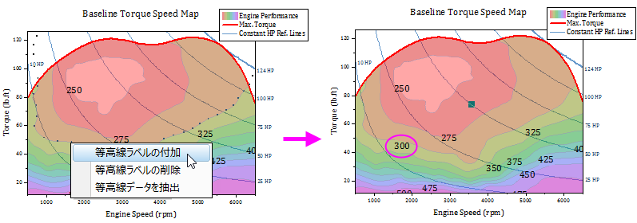

FAQ-890 特定の位置の等高線ラベルを追加するにはどうすればよいでしょうか？
Add-Contour-Label
最終更新日：2021/3/10
等高線軸スケールまたは境界の変更により、新しく設定されたスケール範囲内の等高線ラベルの表示に問題がおこる可能性があります。ここではいくつかの対処法を紹介します。
特定の場所に手動で等高線ラベルを追加する方法
このサンプルグラフでは、300の等高線ラベルが表示されていません。この300の「欠落した」等高線ラベルを追加するには以下のように操作します。
- 
- バージョン2021以前の場合、300の等高線上で3度クリックして選択します。2021b以降のバージョンでは、CTRL + SHIFTキーを押しながら、300の等高線上でクリックして選択します。
- 等高線を選択した状態で、ラベルを追加したい位置で右クリックして開くショートカットメニューから等高線ラベルの付加を選択します。追加されたラベルをドラッグして位置を調整できます。

グラフ上の全ラベルを再描画する方法
新しい表示範囲でのラベルを再描画することも可能です。
Origin 2020より前のバージョン
- 等高線図をダブルクリックして、作図の詳細ダイアログを開きます。カラーマップ/等高線タブで、ラベル列ヘッダをクリックして等高線ラベルダイアログを開きます。
- 主レベル上のみ表示にチェックがついている場合は、あらかじめチェックを外してから、全て隠すを選択します。OKをクリックして、作図の詳細ダイアログボックスに戻ります。
- 適用をクリックしてから、再度、等高線ラベルダイアログを開きます。
- 主レベル上のみ表示のチェックをつけてOKを2回クリックして作図の詳細も閉じます。
バージョン2020以降
- 等高線図上でクリックしてミニツールバーを表示し、等高線ラベルを表示ボタン
 をクリックして一度オフにし、再度オンにします。
をクリックして一度オフにし、再度オンにします。
- または、ラベル再配置ボタン
 をクリックします（Origin 2021b以降）。
をクリックします（Origin 2021b以降）。
キーワード:プロット, 等高線, ラベル